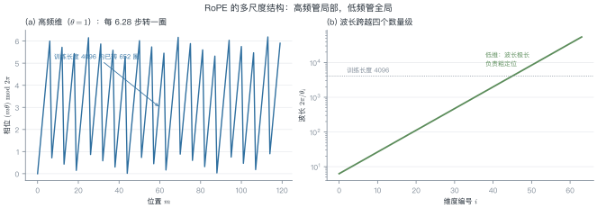
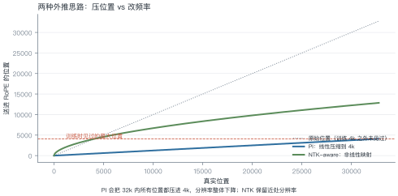
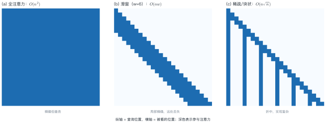
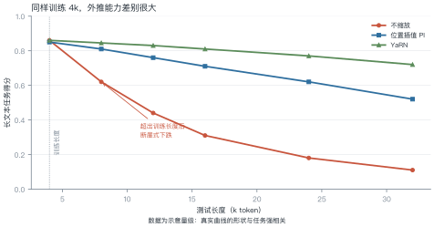

第 12 讲 长上下文¶
本讲位置
第 11 讲让参数变多而算力不变，本讲解决另一个维度：让模型一次能读更多。这既涉及位置编码的数学，也涉及显存与算力的工程账。
📅 事实核查至 2026-11
PI（Chen et al., 2023）、NTK-aware（bloc97, 2023）、YaRN（Peng et al., 2023）、RULER（Hsieh et al., 2024）均已核对原文。
学习目标¶
学完本讲，你应该能够：
- 解释 RoPE 外推失败的原因（相位混叠），并算出某维度转了多少圈；
- 写出 PI 与 NTK-aware 的缩放公式，说明两者差别；
- 说出三种注意力近似各自的复杂度与代价；
- 判断一个"128K 上下文"的宣传值有多少可信度。
0 直觉：窗口是工作内存¶
上下文窗口就是模型的工作内存。窗口越大，能一次处理的东西越多：整本书、整个代码仓库、几百页合同。
但"能装下"不等于"能用好"。三个层次要分开：
| 层次 | 含义 | 检验方式 |
|---|---|---|
| 能装 | 显存放得下 | 跑得动，不 OOM |
| 能读 | 信息真的被注意到 | needle-in-haystack |
| 能用 | 能基于全文推理 | RULER 等多跳任务 |
厂商宣传的"128K"通常只保证第一层。
一句话总结
长上下文 = 位置编码的外推能力 × 注意力近似的取舍 × 显存的预算，三者缺一不可。
1 为什么外推难¶

RoPE 把位置写进相位：第 \(i\) 维的角频率是
例 12.1 算一下转了多少圈¶
\(d=128\) 时，第 0 维的 \(\theta_0=1\) rad/位置。
在训练长度 4096 内，它转过的圈数：
第 63 维（最低频）的 \(\theta_{63}=10000^{-126/128}\approx1.04\times10^{-4}\)，波长
也就是说：训练时模型见过"第 0 维转过 652 圈"的所有相位组合；一旦推到 32K，第 0 维要转 5093 圈，中间那些相位从未在训练中出现过——模型的注意力分数在这里是"外推"，不是"插值"。
从这个例子里能读出三件事
- 高频维度最先坏：它转得最快，超出训练长度后相位完全不可预测；
- 低频维度反而安全：波长 6 万，32K 还不到半个周期；
- 外推失败是"局部先崩"：所以需要分频段处理（YaRN 的思路）。
1.1 位置之外还有两个问题¶
位置编码只是外推困难的一半。另外两个与它无关：
- 中间遗忘（lost in the middle）：把关键信息放在长文档的中段，模型召回率明显低于放在开头或结尾。这与位置编码无关，是注意力分布的固有偏置。
- 注意力稀释：序列越长，softmax 把权重摊得越薄，单个位置分到的注意力越少。128K 时每个 token 平均只能分到 \(1/128000\) 的权重。
所以"外推成功"不等于"长文本任务成功"——后者还要解决信息在长序列中的可达性。
2 三种外推方法¶

2.1 位置插值（PI）¶
把位置除以缩放因子 \(s=L_{\text{new}}/L_{\text{train}}\)：
\(s=8\) 时，32K 的位置被压到 4K 以内，模型看到的位置都在训练范围内。
代价：位置分辨率整体下降 8 倍，相近的两个位置变得更难区分。
2.2 NTK-aware 缩放¶
不压位置，而是放大 base：
\(d=128\)、\(s=8\) 时：
为什么这样更好：放大 base 只让低频维度变慢（波长变长），高频维度几乎不变——保住了局部分辨率。
2.3 YaRN：分频段处理¶
把维度按频率分成三段：
| 频段 | 处理 | 理由 |
|---|---|---|
| 高频（前 ⅓） | 不缩放 | 负责局部，必须保持 |
| 中频 | 线性 ramp 过渡 | 避免突变 |
| 低频（后 ⅓） | 按 PI 插值 | 波长本来就很长，压缩影响小 |
再配一个温度系数修正注意力熵。这是目前 32K–128K 外推的主流做法。
例 12.2 三个数值对照¶
训练长度 4096，目标 32768：
| 方法 | 缩放因子 | 实际改动 |
|---|---|---|
| PI | \(s=8\) | 位置 \(m\to m/8\) |
| NTK-aware | \(s=8\) | \(\text{base}:10^4\to8.3\times10^4\) |
| YaRN | \(s=8\) | 高频不动、低频插值、温度修正 |
三者都用同一个 \(s\)，区别在"改哪里"：PI 改位置，NTK 改频率，YaRN 改一部分频率。
3 注意力近似¶

| 方案 | 复杂度 | 代价 |
|---|---|---|
| 全注意力 | \(O(n^2)\) | 128K 时单层注意力就要几十 GB |
| 滑窗（Mistral） | \(O(nw)\) | 远处信息只能靠多层间接传递 |
| 块状稀疏（Longformer） | \(O(n\sqrt{n})\) | 实现复杂，硬件利用率低 |
| 线性注意力 / SSM（Mamba） | \(O(n)\) | 表达力受限，长程检索弱 |
工程现实：主流仍是"全注意力 + 更好的位置编码 + KV cache 优化"，因为稀疏注意力的实际加速比常常达不到理论值。
4 效果与代价¶

代价主要在两处：
- KV cache 线性增长：128K 上下文的 KV cache 可达几十 GB（第 13 讲细算）；
- 注意力计算 \(O(n^2)\)：序列翻倍，注意力部分算力翻四倍。
所以"支持 128K"和"128K 下还能跑得动、跑得快"是两件事。
KV cache 的粗略账：以 7B 模型（32 层、\(d=4096\)）为例，fp16 下每个 token 的 KV 是
128K 上下文就是 \(128000\times512\ \text{KB}\approx 62\ \text{GB}\)——比模型权重（13 GB）大近五倍。
这就是为什么长上下文服务必须配合 PagedAttention、KV 量化或 GQA：不解决显存，128K 只是纸面参数。
import torch
def rope_scaled(x, positions, base=10000.0, method="pi", scale=8.0):
"""带外推的 RoPE：method ∈ {pi, ntk}"""
d = x.shape[-1]
if method == "ntk":
base = base * scale ** (d / (d - 2))
pos = positions.to(x.dtype)
else: # pi
pos = positions.to(x.dtype) / scale
omega = base ** (-torch.arange(0, d, 2, dtype=x.dtype) / d)
ang = pos[:, None] * omega[None, :]
cos, sin = ang.cos(), ang.sin()
x1, x2 = x[..., 0::2], x[..., 1::2]
out = torch.empty_like(x)
out[..., 0::2] = x1 * cos - x2 * sin
out[..., 1::2] = x1 * sin + x2 * cos
return out
q = torch.randn(1, 32768, 128)
print(rope_scaled(q, torch.arange(32768), method="pi").shape) # PI
print(rope_scaled(q, torch.arange(32768), method="ntk").shape) # NTK-aware
5 怎么评测长上下文¶
| 测试 | 测什么 | 局限 |
|---|---|---|
| needle-in-haystack | 大海捞针：能不能找到一句话 | 只测"检索"，不测"推理" |
| RULER | 多跳、聚合、追踪 | 更接近真实使用 |
| 长文档 QA | 端到端任务 | 受数据质量影响大 |
needle 测试的陷阱：把一句无关紧要的话藏在 128K 里，模型能找到，不代表它能读懂 128K 的代码库。真正要看的是多跳推理：答案需要跨多个位置组合。
实操建议：自己测长上下文时，至少准备三类样本：
- 单点检索（needle）：一句话藏在随机文本里；
- 多点聚合：答案需要汇总分布在 10 个以上位置的信息；
- 跨段推理：答案在第 1 段与第 90 段之间做比较。
只测第一类，几乎必然高估真实能力。
6 工程要点与坑¶
- 先确认"能读"再谈"能用"：跑 needle 通过就上线，多半会翻车。
- 外推要配微调：PI/NTK 直接推理会有性能损失，用几千条长样本继续训一下能补回来。
- KV cache 是真正的瓶颈：128K 时它比模型权重还大，必须配合 PagedAttention/量化。
- 位置不是唯一问题：注意力本身的"中间遗忘"（lost in the middle）与位置编码无关。
- 别迷信宣传值：厂商标的 128K 常指"能装下"，实际有效长度可能只有 32K。
- 滑窗会丢远处信息：需要跨文档引用的任务，滑窗模型会明显吃亏。
7 论文与延伸¶
| 年份 | 论文 | 一句话贡献 |
|---|---|---|
| 2021 | RoFormer / RoPE | 旋转位置编码 |
| 2023 | Extending Context Window via Position Interpolation | PI |
| 2023 | YaRN: Efficient Context Window Extension | 分频段外推 |
| 2023 | Longformer | 滑窗 + 全局 token |
| 2023 | Mamba | 线性复杂度状态空间模型 |
| 2024 | RULER: What's the Real Context Size? | 更真实的长上下文评测 |
8 习题¶
🟢 概念题
- 为什么高频维度最先在外推时失效？
- "能装下 / 能读 / 能用"三者的差别是什么？各用什么测？
🟡 推导题
- 用 (12.1) 算出 \(d=128\) 时第 32 维的波长，并判断它在 32K 内转了几圈。
- 推导 NTK-aware 的 base 缩放指数 \(d/(d-2)\) 的来历（提示：保持低频维度的相对分辨率）。
🔴 实现题
- 用
rope_scaled实现 PI 与 NTK，在随机数据上验证"内积只依赖相对位置"是否仍成立。 - 构造一个 8K 的 needle 测试，比较 4K 训练模型在 PI / NTK 下的召回率。
9 本讲小结¶
一个公式
三种外推
PI 压位置 · NTK 改频率 · YaRN 分频段
三个数字
- 4K 训练、第 0 维转 652 圈
- \(s=8\) 时 NTK 的 base 从 \(10^4\) 涨到 \(8.3\times10^4\)
- 128K 的 KV cache 比模型权重还大
一句话
长上下文不是把窗口调大，是位置编码、注意力近似、显存预算三件事一起解决。
来源¶
- PI、NTK-aware、YaRN、RULER 的公式与结论核对自原文，链接见 §7，核查日期 2026-11。